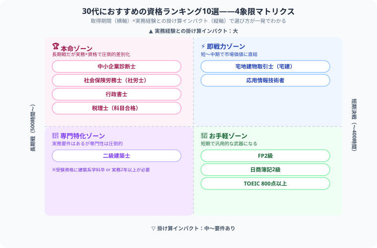

30代が取るべき資格ランキング2026｜転職・年収アップ・独立に役立つ国家資格まとめ
こんにちは、大谷です。「今さら資格を取っても遅いんじゃないか」「20代の若手に混じって勉強するのが恥ずかしい」——30代で資格取得を考えている方が抱えるその焦りや悩み、正直こちらまで胸が締め付けられます。
ただ、はっきり言わせてください。30代の資格は「ゼロから積み上げる武器」ではなく、あなたが既に何年もかけて積み上げてきた実務経験を、市場価値に変換するための最後のピースです。だからこそ、これは僕の完全なガチ主観ですが、20代向けの一般論ではなく「実務経験との掛け算」という視点だけで資格を選び抜いてほしい。今の会社・業界での経験を無駄にしないための資格戦略を、先輩としてお届けします！
また、記事の末尾のほうにある【いいねボタン】をポチッと押してもらえると、僕のモチベーション維持のために、めちゃくちゃ嬉しいです！
「30代でも資格は意味あるの？」「転職のために何か取りたい」「独立を視野に入れている」—— 30代は20代と違い、業務経験という武器がある分、資格との掛け合わせで最大の価値を発揮できる年代です。費用対効果の高い資格を厳選してランキング形式で紹介します。
30代が資格を取るメリット
- 業務経験×資格で市場価値が跳ね上がる：20代の資格のみより転職競争力が格段に高い
- 管理職・専門職へのステップアップ：一部の昇格要件に資格が必要な企業も多い
- 独立・副業への切り札になる：40代以降の独立を見据えた30代の仕込み
- AI時代のキャリア防衛：専門資格保有者は自動化の影響を受けにくい
目的別おすすめ資格マップ
| 目的 | おすすめ資格 | 取得期間の目安 |
|---|---|---|
| 転職・年収アップ | 中小企業診断士・応用情報・社労士 | 1〜2年 |
| 不動産・建設業界へ | 宅建・二級建築士・管理業務主任者 | 6ヶ月〜1年 |
| 金融・保険業界へ | FP2級・証券外務員・簿記2級 | 3〜8ヶ月 |
| 独立開業 | 社労士・行政書士・税理士 | 1〜3年 |
| IT業界へ転職 | 応用情報・基本情報・AWS資格 | 6ヶ月〜1年 |

30代おすすめ資格ランキングTOP10
中小企業診断士30代最強
勉強時間：800〜1,200時間｜合格率：約4%（最終）｜難易度：★★★★★
合格者の平均年齢が40歳前後と、30代での取得が最も多い資格。経営・マーケティング・財務・ITなど幅広い知識が身につく。コンサルへの転職、社内での企画職昇格、副業コンサルに直結。業務経験との掛け合わせが大きい。
社会保険労務士（社労士）
勉強時間：500〜800時間｜合格率：約6〜8%｜難易度：★★★★★
人事・労務経験者が取れば圧倒的な市場価値に。HR領域の転職に強く、独立後の顧問契約も安定。30〜40代の合格者が多く、実務経験を活かした独立が狙える。受験資格（大卒等）に注意。
宅地建物取引士（宅建）コスパ◎
勉強時間：300〜400時間｜合格率：約15〜17%｜難易度：★★★☆☆
不動産業界への転職・独立に必須の資格。不動産会社5人に1人の設置義務があり、業界での需要は永続的。400時間程度で取れるコスパの高さも◎。宅建を持つだけで不動産会社への転職が格段に楽になる。
応用情報技術者（AP）
勉強時間：300〜500時間｜合格率：約20〜25%｜難易度：★★★☆☆
IT業界での評価が高いIPAの国家資格。SE・PG→PL（プロジェクトリーダー）へのステップアップ、IT管理職昇格の要件になることも多い。30代のエンジニアにとって「持っていないと恥ずかしい」レベルの資格。
FP2級（ファイナンシャルプランナー）
勉強時間：150〜200時間｜合格率：約40%｜難易度：★★★☆☆
金融・保険業界への転職、副業（ライター・YouTube）への活用、自身の資産形成知識として全方位で使える。比較的短期間で取得できるため、他の難関資格と並行して取るのもあり。
行政書士
勉強時間：500〜800時間｜合格率：約10〜15%｜難易度：★★★★☆
許認可申請・遺言書・契約書など幅広い業務の国家資格。外国人ビザ申請（入管業務）は近年需要急増中。社労士・税理士とのダブルライセンスで総合的な中小企業支援が可能になる。
日商簿記2級
勉強時間：200〜350時間｜合格率：約20〜30%｜難易度：★★★☆☆
経理・財務職への転職の入門資格として定番。管理会計・決算書の読解など、経営層とのコミュニケーションにも活かせる。中小企業診断士・税理士を目指す方の登竜門としても人気。
TOEIC 800点以上
勉強時間：200〜400時間（現状スコアによる）｜外資系・グローバル企業への転職・昇格要件として広く活用。30代でのスコアアップは転職市場でのアピールになる。資格ではなく「スコア」での評価が特徴。
二級建築士
勉強時間：700〜1,000時間｜合格率：約25%｜難易度：★★★★☆
建設・不動産業界での設計・施工管理に必須。宅建と組み合わせることで不動産×建設の専門家として独立もできる。実務経験（建築系学科卒または実務2年以上）が必要。
税理士（1〜2科目先行取得）
勉強時間：500〜600時間（1科目）｜難易度：★★★★☆〜★★★★★
全科目取得には長期戦になるが、科目合格制のため1〜2科目から取得を始められる。30代で簿記論・財務諸表論を取得し、40代で独立を目指すパターンが多い。会計・経理業務の実務経験があると学習効率大幅アップ。
30代の学習時間の現実と対策
30代社会人の平均的な学習時間は「平日1〜1.5時間、週末3〜4時間」で月間約40〜50時間が現実的な上限です。
| 資格 | 必要時間 | 月40時間での取得期間 |
|---|---|---|
| FP2級 | 150〜200時間 | 約4〜5ヶ月 |
| 宅建 | 300〜400時間 | 約8〜10ヶ月 |
| 応用情報 | 300〜500時間 | 約8〜13ヶ月 |
| 行政書士 | 500〜800時間 | 約12〜20ヶ月 |
| 社労士 | 500〜800時間 | 約12〜20ヶ月 |
| 中小企業診断士 | 800〜1,200時間 | 約20〜30ヶ月 |
仕事・家庭・体力……20代の頃とは違う制約を抱えながら、それでも自分のキャリアのために勉強時間を確保しようとしているあなたは、本当に尊敬に値します。実務経験という武器を持つあなたなら、正しい資格を選べば必ず結果はついてきます。心から応援しています！この記事が少しでも力になったら、僕の執筆のモチベーション維持のために、この下にある【いいねボタン】をポチッと押してもらえると、めちゃくちゃ嬉しいです！